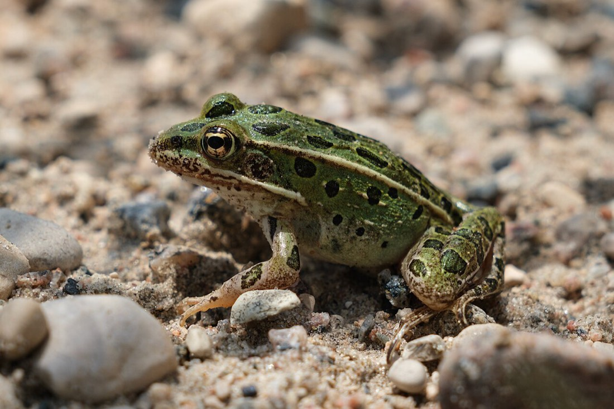

Northern Leopard Frog
Lithobates pipiens
- Kind
- amphibian
- Native to Vermont
- yes
- Legal status
- State Natural Heritage rank S4 (relatively common). State listing and SGCN status are not on the page read. "Fairly common in the Lake Champlain Basin" (Atlas). (checked 2026-10-31)
- Look-alikes
- Pickerel frog (it has yellow under its legs and around its waist)
Pictures

Names
Northern Leopard Frog, Lithobates pipiens.
Range and habitat
It needs permanent water for overwintering, floodplains and marshes for breeding, and wet meadows and fields for foraging (Atlas). Beyond "fairly common in the Lake Champlain Basin", the page gives no statewide range.
How to identify (by season; look-alikes and the key difference)
- Size: a large adult averages about 3.3 inches (Atlas).
- Marks: a gold to green background with black spots "randomly distributed" over the back, sides and legs, each with a light halo; gold or brown dorsolateral ridges; a white belly with no other markings.
- Look-alike (Atlas): the pickerel frog, which has yellow under its legs and around its waist.
Through the year
Dates are typical for Vermont and shift with elevation and year; "approximate" means the source gave a season and the dates are a translation of it.
| When | What | Look for | What to do | Dates |
|---|---|---|---|---|
| Apr 1 to May 15 | calling (watch) | The Atlas says calling is heard April through mid-May, most commonly in mid-April: a two-part call of taps followed by a sound like rubbing a balloon. Egg masses are softball-sized and many females often lay in the same area. | - | stated |
Role and management
The Atlas gives no threats, management or landowner advice (including mowing in fields) and asks only for sighting reports from places with no report in the last five years. Because it forages in wet meadows and fields, the library has no source on how mowing affects it.
What helps it thrive (light, soil, shelter, food and the trees it uses)
- Water, shade and cover (the Guide, chapter 30). Most reptiles and amphibians need water for some stage of their life: conserve streams, ponds, wetlands and vernal pools. Frogs, toads and most salamanders lay eggs in water; many breed in temporary vernal pools free of fish, where the young change from egg to larva to adult in one summer if the pool stays wet (dry years give few eggs or hatchlings). Keep intact forest buffers along water, rock walls, brush piles, downed trees and hollow stumps; leave intact leaf litter and rotten logs; leave coarse woody debris when working in the woods ('woods that look like city parks are not good habitat'); keep streams shaded and free of sediment with a naturally vegetated buffer for night-time feeding; abundant shade keeps the woods cool and moist.
- This species: prefers damp meadows with permanent ponds (Guide), so keep the pond and the damp meadow around it.
Legal status
Not stated on the page read.
Sources
- Vermont Reptile and Amphibian Atlas, Northern Leopard Frog species summary (Ariel K. McK. Burgess): https://www.vtherpatlas.org/herp-species-in-vermont/lithobates-pipiens/ (read through a summarizing fetch 2026-10-31)
- Vermont Fish & Wildlife Department, A Landowner's Guide, Wildlife Habitat Management for Lands in Vermont, chapter 30 (Reptiles and Amphibians): https://vtfishandwildlife.com/sites/fishandwildlife/files/documents/Learn%20More/LandownersGuide/Landowner-Guide-Complete.pdf (read as text 2026-11-01)
What this page is based on
Kind of source: primary-agency and Vermont atlas (Vermont Fish & Wildlife; the Vermont Reptile and Amphibian Atlas)
What was read: The vermont reptile and amphibian atlas species summary, read through summarizing fetches on 2026-10-31; neither shows a last-updated date. Months in the calendar are the Atlas's or the state page's own words where basis is stated, and a translation of a season where basis is approximate. Pictures: the Wikimedia Commons description and the photo itself were looked at. Habitat needs added 2026-11-01 from chapter 30 of the Vermont Fish and Wildlife Landowner's Guide (read as text).
Last checked: 2026-10-31
Vermont land and forest reference, built 2026-11-01. Rules and dates here are summaries, not legal advice; dates shift with elevation and year. Photo and recording credits · Note: _reference/US-VT/Species/Northern Leopard Frog.md